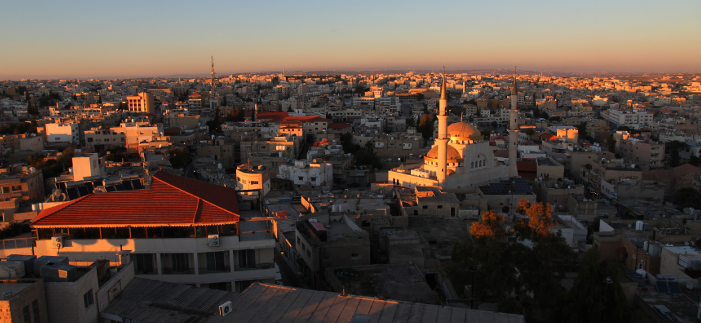

Madaba, a city steeped in history, is renowned for its stunning Byzantine and Umayyad mosaics. The city is home to the famous Madaba Map, a detailed mosaic map of the Holy Land from the 6th century, found in the Greek Orthodox Church of St. George.
As you wander through the narrow streets, you’ll encounter colorful mosaics, traditional handicrafts, and a warm community that embodies the spirit of Jordanian hospitality. Madaba is not just a city—it’s a living museum that tells the story of centuries past.
